Work
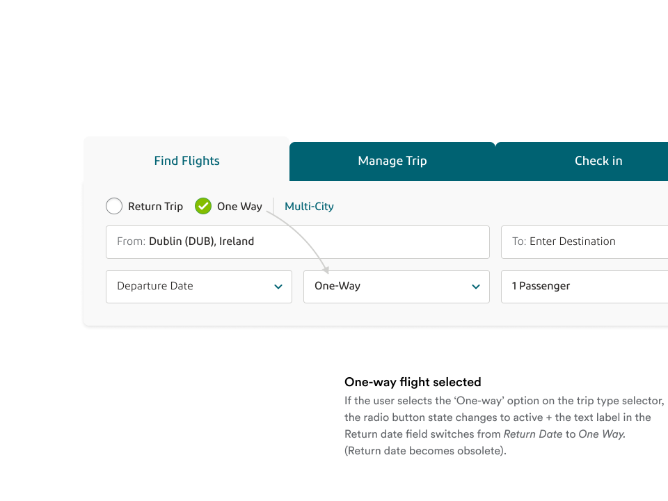
Aer Lingus Flight Search
Product Design, UX

Aer Lingus Two-Factor Authentication
UI Design, UX

Aer Lingus Booking Confirmation Email
Accessibility, UX
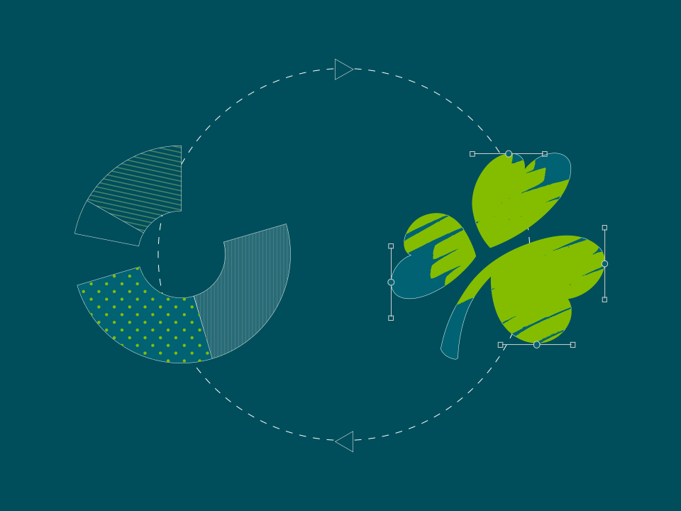
Conversion Optimisation
Conversion Design, Optimisation
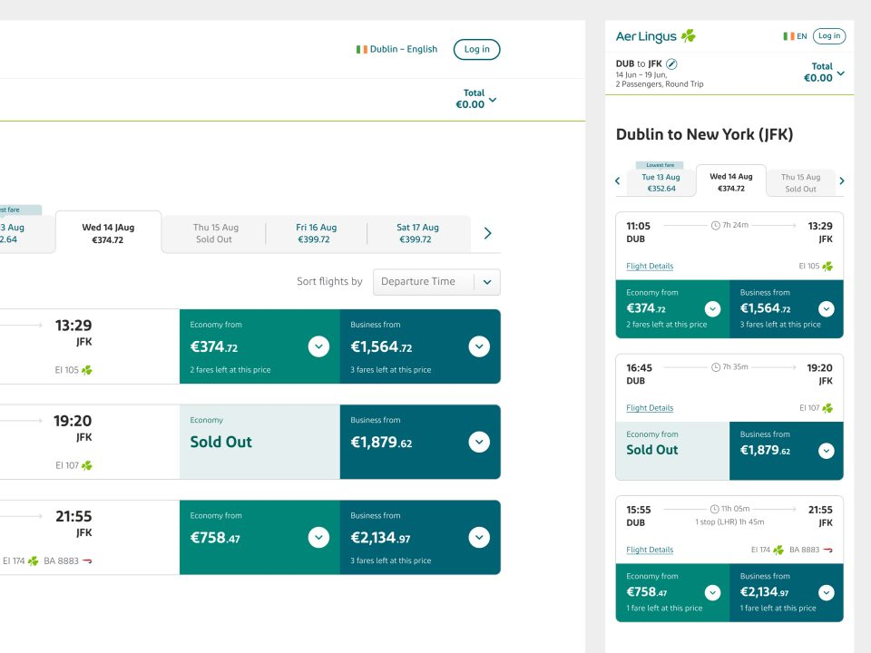
Aer Lingus Booking Flow
Accessibility, Conversion Design, Product Design
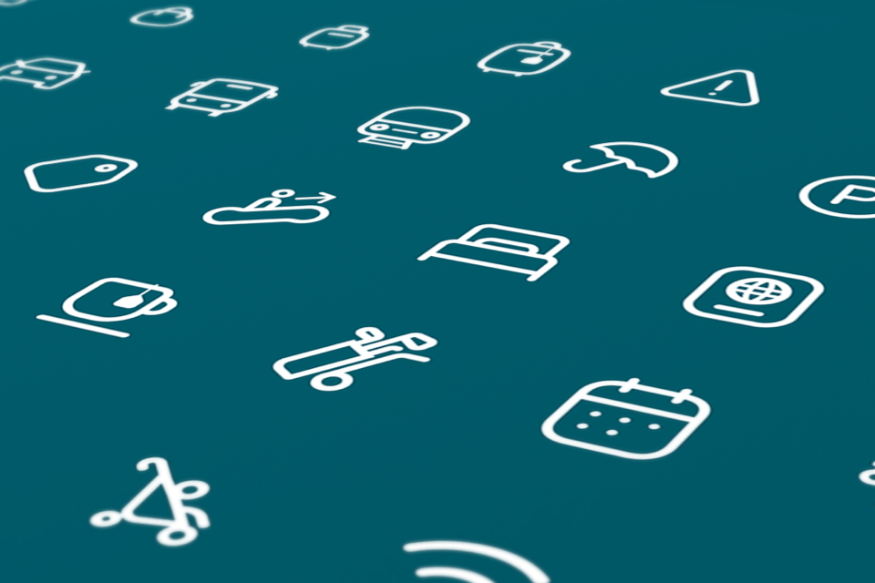
Aer Lingus Iconography
Branding, UI Design, Web Design
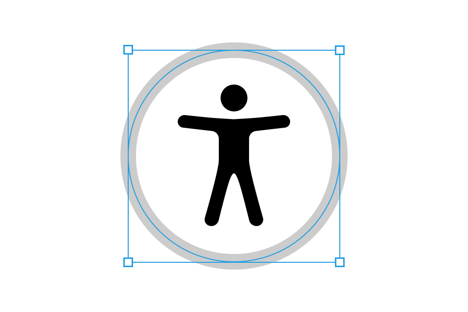
Designing for Accessibility
Accessibility, UX, Web Design
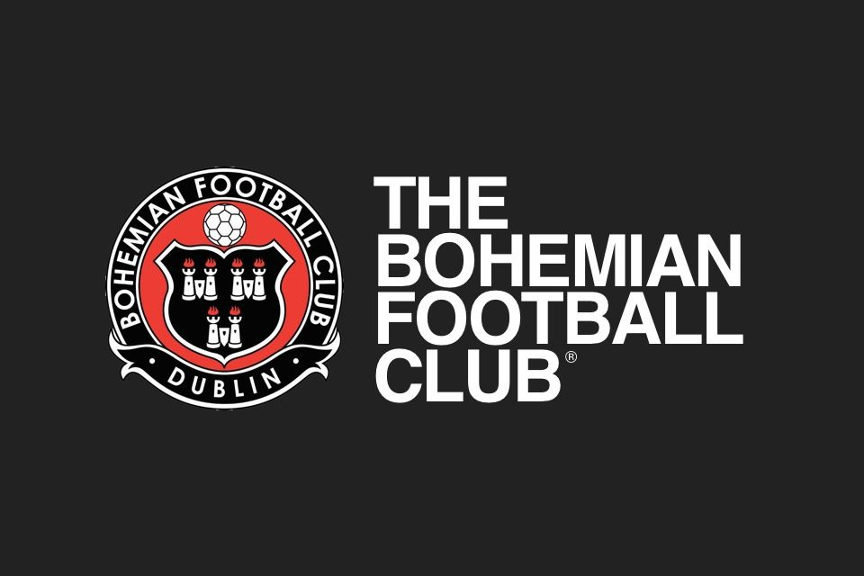
Bohemian FC
Graphic Design, Web Design
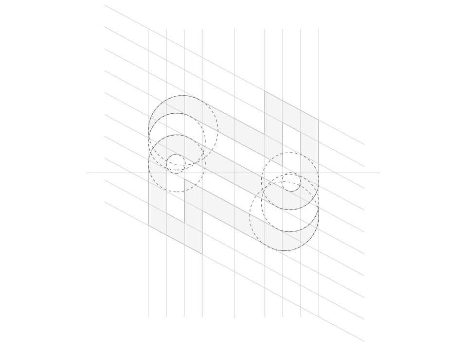
Brand Identity
Branding, SME, UX
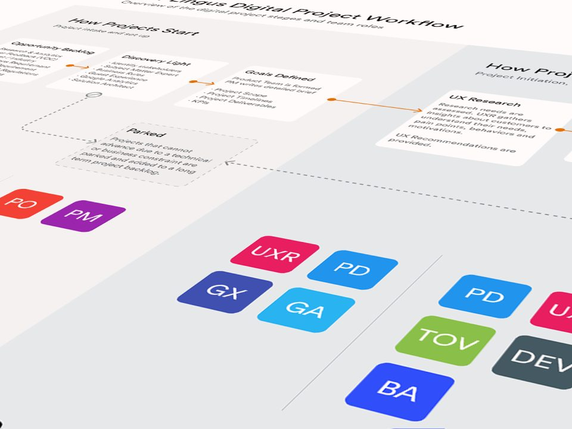
UX/UI Design Process
UI Design, UX

The Cock Tavern
Branding, SME, Web Design
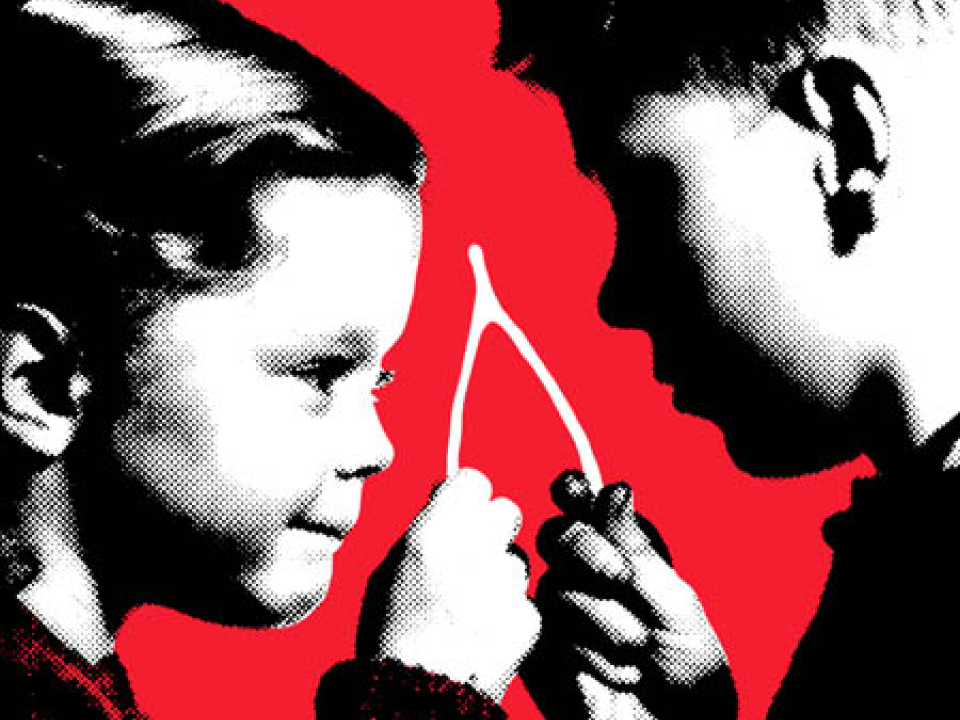
Print Design
Illustration, Print

Aer Lingus Seat Selection
Accessibility, UI Design, UX

Vanplus Insurance +
Branding, Web Design

Personal Projects
Branding, Print, Web Design
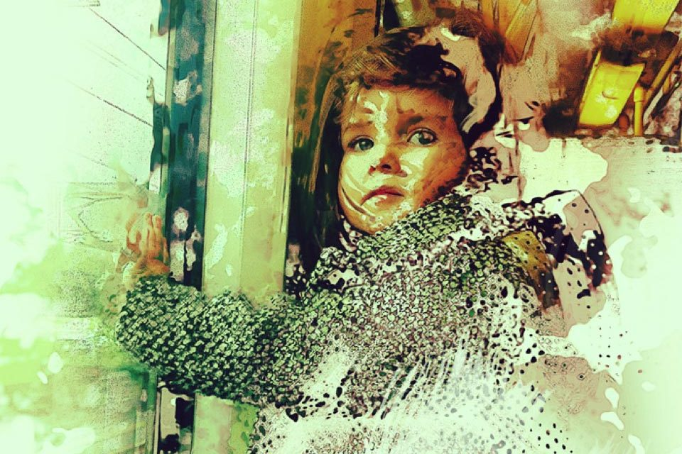
Artworks
Illustration
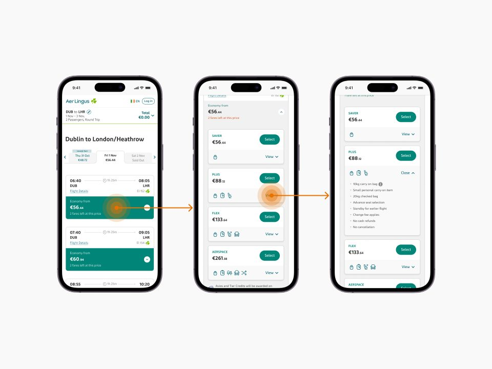
Aer Lingus Search Results
Conversion Design, Optimisation, Product Design
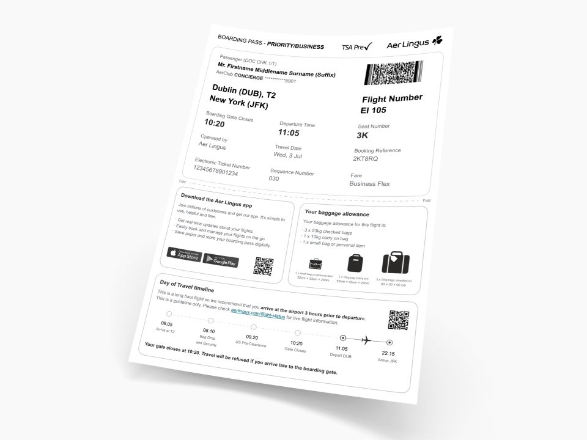
Aer Lingus Boarding Pass 2024
Product Design, UX Strategy

Moneycube™ Brand Development
Branding
SME Web & Branding
Branding, Illustration, SME

COVID Response Projects
UI Design, UX